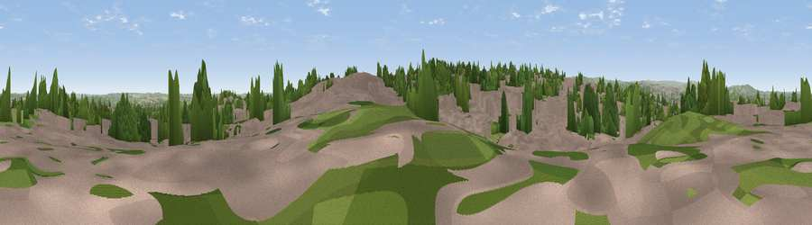

Viewpoint near Sheffield
#31593 in England · top 60% of its area beats it · near SheffieldWhere it is
The exact computed spot (SK 38025 85225). Click the marker for map links.
The view, rendered

A 360° render of this exact spot computed from the terrain model, tree cover and land cover — summer colours, afternoon light, calibrated against photographs of famous viewpoints. Real trees, hedges and buildings will differ in detail.
The panorama
Grey silhouette: terrain skyline in each direction (720 bearings, Earth curvature and refraction included). Dashed green: skyline with trees (+15 m) and buildings (+8 m) as obstacles. Blue strip: how far the ground is visible on each bearing.
Where the view opens
Wedge length = distance to the farthest visible ground on that bearing (vegetation-aware). Rings at 10, 25 and 50 km.
What fills the view
59% built-up · 29% woodland · 10% grassland · 2% cropland
Angular shares of the visible panorama (visual magnitude), not map area. Landscape diversity 0.43 (0–1 Shannon).
Key numbers
More beautiful places nearby
The staircase of upgrades: each row has a higher view potential than everything closer. Driving times are estimates from straight-line distance, calibrated against real road routing — check an actual route before setting out.
| Place | Direction | Drive | Score |
|---|---|---|---|
| Viewpoint near Sheffield | NNW · 1 km | ~4 min | 45.4 |
| Viewpoint near Ridgeway | SSW · 2 km | ~6 min | 50.2 |
| Viewpoint near Ridgeway | SE · 3 km | ~7 min | 60.2 |
| Viewpoint near Ridgeway | SE · 4 km | ~8 min | 67.6 |
| Viewpoint near Oughtibridge | NNW · 10 km | ~19 min | 68.4 |
| Viewpoint near Oughtibridge | NNW · 10 km | ~20 min | 72.5 |
| Viewpoint near Wharncliffe Side | NNW · 13 km | ~24 min | 75.2 |
| Tissington Hill | SW · 40 km | ~59 min | 75.5 |
53.36254, -1.43008 · source: screening · position refined by local search. Computed location — check access rights before visiting.